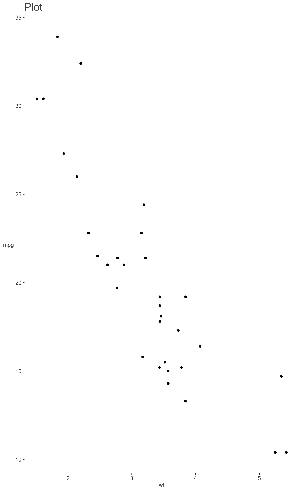

Clean up plots from their defaults.
theme_clean(font_size = 12, font_family = "", center_axis_labels = FALSE) theme_trueMinimal(font_size = 12, font_family = "", center_axis_labels = FALSE) theme_plotly(vis, MB = FALSE) theme_blank(vis, MB = FALSE)
| font_size | Font size for axis labels in theme_clean |
|---|---|
| font_family | Font family for axis labels in theme_clean |
| center_axis_labels | Logical. Center axis labels in theme_clean. Default is FALSE. |
| vis | |
| MB | For plotly, an option to display the mode bar. Defaults to FALSE. |
From a gray background, to unnecessary gridlines, to by-default reference lines, some of the more popular visualization packages come out 75% fantastic and 25% questionable/arbitrary/problematic. These functions remove unnecessary gridlines, 'de-bold' the blacks, etc.
- ggplot2: theme_clean This function takes a ggplot object
and removes the gray background, gridlines and adds opacity to the default
black axes and labels, allowing the pattern of the visual to be expressed
in unimpeded fashion. theme_trueMinimal was the old name of this
function and is still usable.
- plotly: theme_plotly, theme_blank removes reference
lines at zero, and some of its 'modebar' is unnecessary. Otherwise little
is changed at this point, except for theme_blank, which is like theme_void
for ggplot.
You may continue to override any aspect of these themes. For example with
ggplot2, you would just add a theme afterward just like you would any other
plot.
library(visibly) library(ggplot2) data(mtcars) ggplot(aes(wt, mpg), data=mtcars) + geom_point() + labs(title='Plot') + theme_clean()ggplot(aes(wt, mpg), data=mtcars) + geom_point() + labs(title='Plot') + theme_clean(center_axis_labels = TRUE)library(plotly)#> #>#> #> #>#> #> #>#> #> #>#> #> #>#> Warning: `arrange_()` is deprecated as of dplyr 0.7.0. #> Please use `arrange()` instead. #> See vignette('programming') for more help #> This warning is displayed once every 8 hours. #> Call `lifecycle::last_warnings()` to see where this warning was generated.#> #> #>